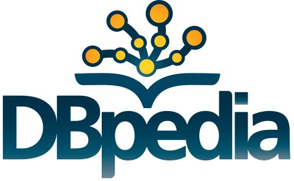

Contact Us¶
This tool was developed under the Google Summer of Code program, mentored by the open-source organisation DBpedia.
{kind=link}
The inception of this project was in Google Summer of Code 2016, and the it’s detailed progress report can be found here. This was the first version of the tool and the tool and was developed by Federica.
The project continued for the Google Summer of Code 2017 program too, adding many features and improvements to the existing project. The progress reports of this year’s contributions can be found here. The few related blog posts to the progress can be found here.
Have Questions?¶
Post your queries on the DBpedia support page here.
You can also email the developers with your queries or open issues on the GitHub page in case of bugs.
Want to Contribute?¶
The repository for List-Extractor can be found here.
Fork this repository, experiment, tinker, find and fix bugs and add new domains/mapping rules or features. You can then send a pull request for your enhancements/bug fixes.
Get in Touch¶
You can also email the developers in case of queries, suggestions and improvements :)
- Krishanu Konar: <krishanukonar@gmail.com>
- Federica Baiocchi: <feddiebai@gmail.com>